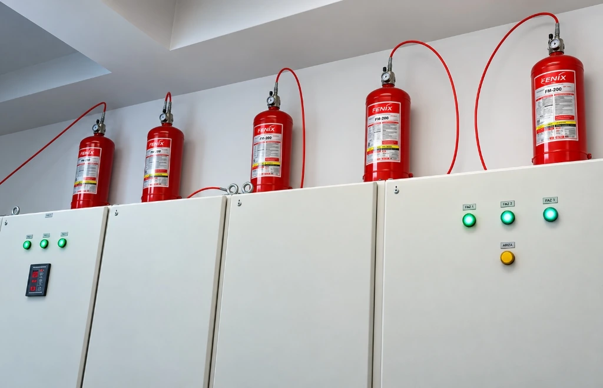
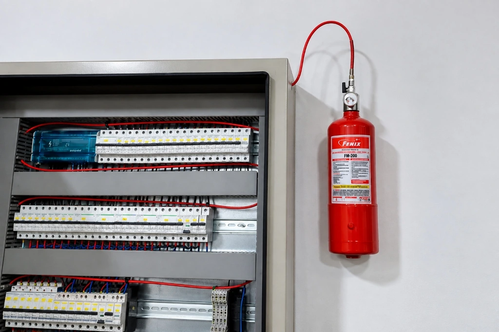

Pano İçi
Yangın Söndürme Sistemleri
Elektrik panoları, otomasyon kabinleri ve MCC üniteleri için noktasal ve otomatik gazlı mikro yangın söndürme çözümleri.
Elektrik panosu yangın söndürme sistemleri; aşırı yüklenme, kısa devre ve ark oluşumu nedeniyle başlayan yangınlara yangının erken aşamasında doğrudan kaynağında müdahale ederek tesis geneline sıçramasını önlemeye yardımcı olur.

Pano İçi Yangın Söndürme Sistemi Nedir?
Elektrik panosu gazlı yangın söndürme sistemleri, elektrik panolarındaki yangın riskini azaltmak ve olası bir alevlenmeye hızla müdahale etmek için tasarlanmış özel söndürme çözümleridir.
Günümüzde sanayi tesislerinden ticari binalara kadar elektrik panolarında aşırı elektrik yüklenmesi, kablo gevşeklikleri ve ark oluşumu gibi etkenler yangın riskini artırmaktadır. Elektrik panolarında başlayan yangınlar kısa sürede tüm tesisi tehdit eden büyük olaylara yol açabileceğinden, bu riskin kaynağında kontrol altına alınması kritik öneme sahiptir.
Bu sistemler, yangın durumunda devreye girerek yangını uygun bir söndürme ajanıyla bastırır ve ortamı kontrol altına alır. Elektriksel iletkenliği bulunmayan temiz gazlı söndürücü ajanların tercih edilmesi, elektronik ekipman bulunan hacimlerde kalıntı oluşturmayan çözümlerin değerlendirilmesine olanak sağlayabilir ve ekipmanın fiziksel hasar görme riskini sınırlandırır.

Pano İçi Gazlı Yangın Söndürme Sistemi Nasıl Çalışır?
Pano içi gazlı yangın söndürme sistemleri otomatik çalışma prensibine dayalı olarak tasarlanır. Bununla birlikte yangın algılama, aktivasyon, gaz yayılımı ve enerji kesme adımları; kullanılan sistemin konfigürasyonuna, muhafazanın yapısına ve seçilen ekipmana bağlı olarak farklılık gösterebilir. Tipik bir uygulamada süreç genel hatlarıyla şu aşamaları içerebilir:
Örnek Sistem Entegrasyonu: Pano içi FM200 gazlı yangın söndürme sistemleri, dielektrik dayanımı ve hızlı reaksiyon yeteneği ile elektrik panolarında sıklıkla projelendirilen temiz gazlı çözümlerden biridir. Temiz gazlı sistemlerin detaylarını FM200 Gazlı Yangın Söndürme Sistemleri sayfamızdan inceleyebilirsiniz.
Pano İçi Yangın Söndürme Sistemleri Neden Kullanılır?
Pano içi gazlı yangın söndürme sistemleri, elektrik panolarındaki arıza risklerini azaltmak ve can/mal emniyetini artırmak adına belirgin avantajlar sunar:
Hızlı Müdahale
Yangını erken aşamasında mikro hacim içinde algılar ve otomatik olarak devreye girerek alevlerin büyümesini ve yayılmasını önlemeye yardımcı olur.
Temiz Ajan ile Müdahale
Temiz söndürme ajanları elektriksel olarak iletken değildir. Uygun söndürme ajanlarının tercih edilmesi, elektronik ekipman bulunan hacimlerde kalıntı oluşturmayan çözümlerin değerlendirilmesine olanak sağlayabilir; su veya toz bazlı söndürücülerin neden olabileceği ikincil korozyon ve temizlik risklerini en aza indirmeye yardımcı olur.
Alan Tasarrufu
Büyük oda tipi sistemlere kıyasla daha az yer kaplar. Elektrik panosu gibi dar ve kısıtlı iç hacimlere kompakt silindir ve hat tasarımıyla entegre edilir.
Elektrik Panosu Güvenliği
Panoda meydana gelebilecek ark ve aşırı ısınma kaynaklı arızaların yangına dönüşmesini önleyerek tesis genelinde yüksek maliyetli duruş sürelerini ve hasar risklerini azaltmaya katkı sağlar.
Pano İçi Yangın Söndürme Sistemi Nerelerde Kullanılır?
Elektrik enerjisinin yoğun şekilde dağıtıldığı ve sürekliliğin kritik olduğu tüm kurumsal ve endüstriyel ortamlarda uygulanır:
Fabrikalar, imalat atölyeleri ve enerji santrallerinde bulunan ana dağıtım, kompanzasyon ve motor kontrol panolarının (MCC) korunması.
Sunucu kabinleri, kritik veri depolama panoları ve kesintisiz enerji dağıtım kabinetlerinde veri kaybını önleyen mikro koruma.
Kesintisiz güç kaynakları (UPS), ameliyathane güç panoları ve hayati tıbbi cihaz dağıtım dolaplarında güvenli yangın koruması.
Yüksek binalar, iş merkezleri ve AVM'lerde kat elektrik panoları, jeneratör kabinleri ve asansör kumanda panoları.

Pano İçi Sistemlerde Kullanılan Söndürme Çözümleri
Elektrik panosu gazlı yangın söndürme sistemlerinde panonun yapısına, ortam şartlarına ve korunacak elektronik aksamın hassasiyetine göre farklı söndürücü ajanlar projelendirilir:
FM-200 Gazlı Söndürme
Elektrik panolarında yaygın olarak değerlendirilen temiz gaz ajanlarındandır. Elektriksel iletkenliği bulunmadığından hassas elektronik devrelerin bulunduğu hacimlerde tercih edilir; boşalma sonrası kalıntı bırakmaz ve mekanik temizlik gereksinimi oluşturmaz. Sistem tasarım kriterlerine ve pano hacmine göre uygun gaz miktarı projelendirilir.
FK-5-1-12 Temiz Ajan Çözümleri
FK-5-1-12 sınıfı temiz ajan çözümleri; geçmişte “Novec 1230” adıyla yaygın şekilde anılan ürün ve teknolojiyle ilişkilendirilir. Sıfır ozon tüketme potansiyeli ve düşük küresel ısınma değeri ile modern elektrik panoları ve kritik kabinlerde çevreye duyarlı, kalıntı bırakmayan bir temiz söndürme ajanı alternatifi sunar.
CO₂ Gazlı Söndürme Çözümleri
CO₂, temiz ajanlardan farklı güvenlik ve tasarım kriterleri bulunan bir söndürme ajanıdır. Uygunluğu; korunacak risk, muhafaza yapısı, havalandırma, insan bulunma durumu ve ilgili tasarım kriterleri dikkate alınarak proje bazında değerlendirilmelidir. Tasarım ve güvenlik gereksinimleri NFPA 12 standart ilkeleri kapsamında ele alınır.
Teknik ve Tarihsel Bilgilendirme: Halon Gazları ve Modern Standartlar: Halonların yeni yangın söndürme uygulamalarındaki kullanımı, ozon tabakasını incelten maddelere ilişkin uluslararası kısıtlamalar (Montreal Protokolü / EPA SNAP çerçevesi) nedeniyle büyük ölçüde sona ermiştir. Güncel EPA açıklamalarında küresel halon üretiminin 2010 yılı itibarıyla aşamalı olarak sonlandırıldığı (phase-out) belirtilmekte olup, mevcut bazı legacy tesislerde geri kazanılmış/dönüştürülmüş halon kaynaklarına dayalı kullanım görülebilmektedir. Yeni pano içi söndürme projelerinde ise çevre ve güvenlik standartlarına uygun modern temiz söndürme ajanları (FM-200, FK-5-1-12) standart olarak tercih edilmektedir.
Pano İçi Sistem Seçimi Nasıl Değerlendirilir?
Elektrik panosu yangın güvenliğinde doğru sistem konfigürasyonu, panonun teknik özellikleri ve çevresel şartlar göz önünde bulundurularak belirlenir:
Pano Hacmi ve Sızdırmazlık Değerlendirmesi
Koruma yöntemi ve kullanılacak söndürme ajanı; pano hacmi, muhafazanın yapısı, riskin niteliği, sistem tasarımı ve ilgili uygulama kriterleri dikkate alınarak değerlendirilir. Panonun havalandırma açıklıkları ve kablo geçiş noktaları gazın ortamda tutulumu açısından incelenir.
Direkt veya İndirekt Aktivasyon Yaklaşımları
Gazın doğrudan delinen algılama tüpünden lokal olarak boşaldığı direkt sistemler ile algılama hattının silindir vanasını açarak gazı dağıtım boruları ve nozullarla tahliye ettiği indirekt sistemler, pano büyüklüğüne ve iç bölme yapısına göre alternatif uygulama yaklaşımları sunar.
Pano Enerji Kesme Entegrasyonu
Yangın algılandığında veya sistem aktive olduğunda, entegre basınç anahtarı (switch) mekanizması pano ana şalterine sinyal ileterek elektriğin kesilmesine ve ark riskinin sınırlandırılmasına destek olabilir.
Elektrik Panoları ve Küçük Muhafazalarda Tasarım Kriterleri
Elektrik panoları gibi küçük muhafazalarda uygulanacak söndürme yaklaşımı, klasik oda tipi total flooding varsayımlarından farklı tasarım değerlendirmeleri gerektirebilir. Sistem seçimi; muhafaza geometrisi, ajan tutulum koşulları (agent retention / hold-time), algılama/tetikleme yöntemi ve ilgili sistemin listelenmiş uygulama sınırlarına göre değerlendirilmelidir.
NFPA teknik materyalinde ve ilgili mühendislik kılavuzlarında, küçük elektrik kabinleri gibi muhafazaların hold-time (gaz tutma süresi) ve sistem konfigürasyonuna göre bağımsız olarak değerlendirilmesi gerektiği belirtilmektedir. Temiz ajan söndürme sistemlerinde genel referans olarak NFPA 2001, karbondioksitli sistemlerde ise NFPA 12 standart ilkeleri dikkate alınır.
Elektrik Panosu Yangın Söndürme Sistemleri Fiyatları
Pano içi gazlı yangın söndürme sistemlerinin projelendirme ve uygulama maliyeti, korunacak alanın teknik detaylarına bağlı olarak değişkenlik gösterir:
Gereken söndürücü tüp kapasitesini belirleyen iç hacim ve muhafaza boyutları.
FM-200, FK-5-1-12 veya CO₂ seçeneklerine göre değişkenlik gösteren dolum maliyeti.
Direkt algılama hortumu veya nozullu indirekt borulama altyapısı tercihi.
Aynı tesiste korunacak elektrik panosu adedi ve montaj mesafeleri.
Panolarınız İçin Teknik Keşif ve Fiyat Teklifi Alın
Tesisinizdeki elektrik panoları, kompanzasyon ve otomasyon kabinleri için risk analizi ve pano yapısına uygun sistem konfigürasyonunu belirliyor, projenize özel maliyet teklifi sunuyoruz.
Keşif ve Fiyat Teklifi AlınPano İçi Yangın Söndürme Sistemleri Hakkında Merak Edilenler
Elektrik panosu yangın söndürme sistemleri hakkında en sık sorulan teknik sorular ve mühendislik yanıtları.
Evet. Elektrik panoları, yangın riskinin mikro düzeyde en yoğun olduğu kapalı hacimlerdir. Bu hacimler için özel olarak tasarlanan kompakt silindirli ve ısıya duyarlı algılama hatlı sistemler, panonun fiziksel yapısını bozmadan doğrudan pano içine uygulanabilmektedir.
Evet. Sistem otomatik çalışma prensibine uygundur. Pano içerisine yerleştirilen algılama tüpü veya dedektörler aşırı ısıyı ya da alevi algıladığında, insan müdahalesine gerek kalmaksızın yangının erken aşamasında devreye girerek söndürücü gazı alev kaynağına yönlendirir.
Pano içi söndürme uygulamalarında elektriksel iletkenliği bulunmayan ve ekipman üzerinde kalıntı oluşturmayan temiz ajan çözümleri sıklıkla değerlendirilir. Bu kapsamda FM-200 (HFC-227ea) ve FK-5-1-12 sınıfı gazlar öne çıkarken; riskin niteliği, muhafaza yapısı ve insan bulunma durumuna bağlı olarak CO₂ gibi söndürücü gazlar da ilgili tasarım kriterleri çerçevesinde değerlendirilebilir.
Oda tipi (total flooding) sistemler tüm odayı gazla doldurarak hacimsel koruma sağlar ve geniş boru tesisatı gerektirir. Pano içi sistemler ise doğrudan pano hacmini hedefleyen mikro koruma yaklaşımı sunar; daha az gaz miktarı ile yangını tesis geneline yayılmadan başlangıç noktasında kontrol altına almayı hedefler.
Fiyatlandırma; elektrik panosunun iç hacmine, silindir kapasitesine, seçilen söndürücü ajan türüne (FM-200, FK-5-1-12 vb.), direkt veya indirekt aktivasyon metoduna ve korunacak pano sayısına göre keşif sonrasında belirlenir.
İlgili Sistemler ve Tamamlayıcı Çözümler
Fenix Yangın bünyesinde elektrik ve kritik tesis güvenliği için sunduğumuz diğer yangın söndürme sistemleri.
Elektrik ve sistem odaları için temiz ajanlı gazlı söndürme.
Sistem İncele →Çevre dostu FK-5-1-12 temiz gazlı yangın söndürme sistemleri.
Sistem İncele →Trafo ve elektrik merkezleri için derin yangın koruması.
Sistem İncele →Basınçsız tüp ve borusuz kompakt mikro yangın söndürme.
Sistem İncele →Endüstriyel mutfak pişirme hatları için otomatik söndürme.
Sistem İncele →Kapı fanı testi ile gaz tutma süresinin standart doğrulaması.
Hizmet İncele →Pano İçi Sistem Teklifi Alın
Elektrik panolarınız için teknik keşif, pano hacmine ve risk analizine uygun söndürme ajanı seçimi ve anahtar teslim montaj seçeneklerini değerlendirmek için bizimle iletişime geçebilirsiniz.